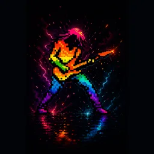

Déposez. Cochez. Exportez.
Un logo. Toutes les icônes.
Luere Icon Studio transforme une seule image en toutes les tailles d'icônes et de favicons dont vous avez besoin — web, macOS, iOS et Windows — écrites dans un dossier bien rangé à côté de votre source, en un seul clic.
Gratuit pour toujours · Sans compte · Nécessite macOS 14 ou plus récent
Glissez une image ici
PNG, JPEG ou TIFF — 1024×1024 recommandé

BonjourMetal.png
source 1536×1536 px
Formats
Prêt à exporter
Trois étapes, aucune courbe d'apprentissage.
Déposez, cochez, exportez. Les fichiers arrivent dans un dossier juste à côté de votre image source.
Déposez un logo
Glissez n'importe quelle image — une source 1024×1024 donne les résultats les plus nets.
Cochez les formats
Web, PWA, macOS, iOS, Windows — ne choisissez que ceux dont vous avez besoin.
Exportez
Tout se génère hors du fil principal dans un dossier <nom>-icons/.
Chaque taille, chaque plateforme.
Une image source en entrée, un jeu d'icônes complet en sortie — rien à configurer, plus rien à redimensionner à la main.
Favicons web
favicon.ico (16/32/48), favicon.svg, jeu de PNG, apple-touch-icon et android-chrome 192/512.
PWA
Des icônes standard (any) plus des icônes maskable (avec zone de sécurité) et un manifest.webmanifest complet — s'installe proprement sur Android et bureau.
Icônes macOS
Un seul icon.icns compilé de 16 jusqu'à 1024, plus un AppIcon.appiconset prêt à glisser dans Xcode.
Jeu AppIcon iOS
Un AppIcon.appiconset complet avec un master 1024px et Contents.json — à glisser directement dans Xcode.
.ico + PNG Windows
favicon.ico multi-résolution (16/32/48/256) plus des PNG autonomes de 16 à 256.
Manifest & extrait HTML
Un site.webmanifest et un head-snippet.html prêt à coller — le branchement se fait au copier-coller.
Net & privé
Redimensionnement CoreGraphics de haute qualité, uniquement des frameworks Apple, aucune dépendance — et rien ne quitte jamais votre Mac.
Aussi par le créateur de Luere Icon Studio
Besoin de réduire vos images aussi ?
Luere compresse, convertit, recadre et redimensionne vos images — avec un aperçu avant/après en direct pour décider exactement combien de qualité échanger contre du poids. Gratuit, privé, sur votre Mac.
Essayer Luere